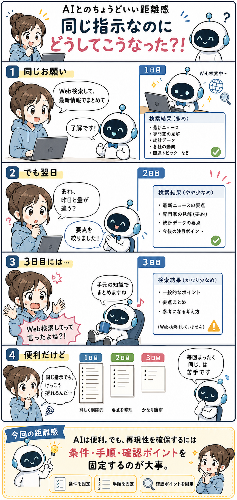

#010
同じ指示なのにどうしてこうなった？！
昨日と同じお願いをしたはずなのに、なんか今日だけ違う。

メモ
AIに同じプロンプトを投げたのに、返ってくる内容が日によって微妙に違うことがあります。
1日目はちゃんとWeb検索して、リンクも多めに拾ってくれる。2日目は同じお願いなのに、なぜか少しコンパクト。3日目には「手元の知識でまとめますね」みたいな顔をしている。いや、Web検索してって言ったよね。
よく見ると、サボっているように見える日だけでなく、見出しの数、説明の厚み、拾う観点も少しずつ違います。こちらは「同じ指示だから同じ結果」が返るつもりでいるので、差分があると地味にびっくりする。
へ〜と思うのは、AIの返答は「前回と同じ手順を機械的に再実行したログ」ではなく、その時点の会話、指示の解釈、検索や要約の判断が混ざってできる文章だというところ。便利だけど、毎回ぴったり同じにはなりにくい。
だから、再現性が大事な作業では「Web検索必須」「検索したURLを列挙」「最低5件」「比較表の列は固定」「最後に確認チェックを出す」みたいに、条件と手順を固定しておくほうが安心です。
今回の距離感
AIは便利。でも、同じ指示で同じ結果を期待しすぎず、再現したい部分は条件・手順・確認ポイントまで固定するくらいがちょうどいいかもしれません。